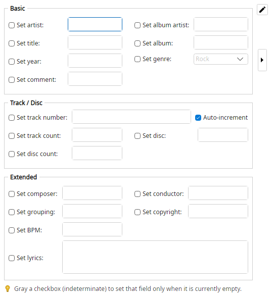

Sets common embedded audio-tag fields on each file in one step. Values update the preview tags; Apply writes them to the files.
Checked fields are written. Gray (indeterminate) checkboxes set a field only when it is currently empty.
(empty Title) >>> Blue Moon Revisited
(existing Artist left alone when only-if-empty) >>> (unchanged)